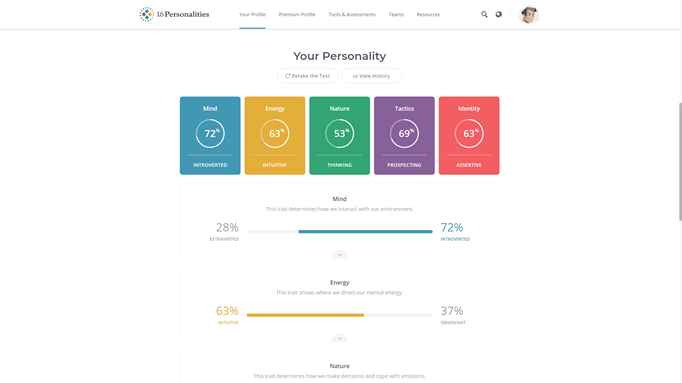
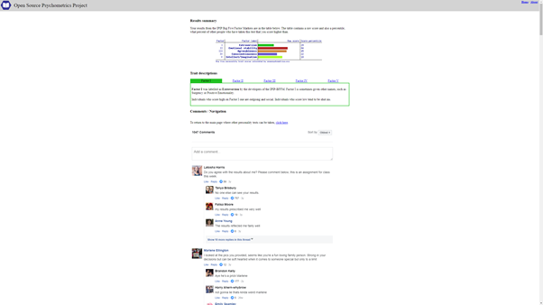

My Myers and Briggs test results:

Also learnig style test result:
And Big 5 factors test results:

The test results state that I am a Assertive Logician, more like a prospective introverted intuitive thinker. (INTP-A). Strenghts include being analytical, open minded and original with a curious mindset usually looking for the truth. Weaknesses would be little bit impatient, insensitive, disconnected and dissatisfied perfectionist.
A tactile learner, meaning like to learn things by doing them. Things are easier to learn by physical movement. Also a visual and auditory learning are good ways
IPIP Big Five Factor Markers show as wess that there is little bit of extroversion (29%) and lot of emotional stability (84%). Agreeableness score is 45% and conscientiouness is at 22% meaning that little disorganised little traditional and conventional (18% Intellect/Imagination)
Those test results I find quite precise overall. It is good that people can see my personality test results and I can see my team members results also. It helps everyone to get along more efficiently in the long run.
When working in a team it helps to work out what types of personalities work better together. I do not know if me being more introverted will cause any problems with lack of communication, but will have to be conscious about the weaknesses and strenghts.
When forming a team probably a good idea would be just to know each others strenghts and places where personalities come to play.
back to main page